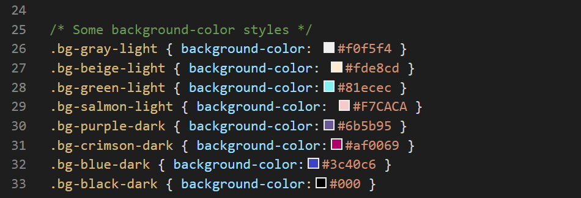
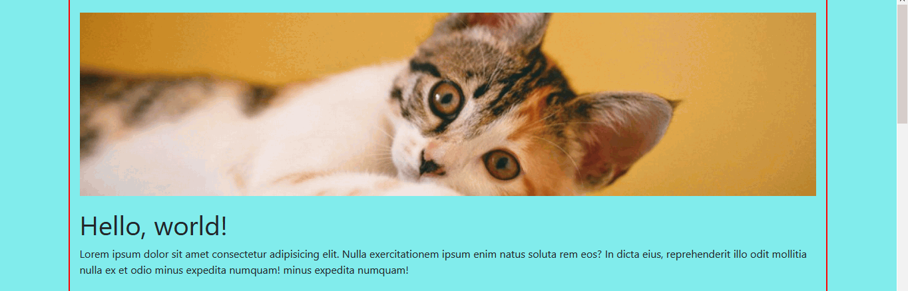

Add coloured borders to div tags to guide your web design tasks when working with grid layouts
Add a custom stylesheet that adjusts the default Bootstrap grid so that it becomes a more practical starting point for designing modern-looking web pages.
Update the background colours of Bootstrap grid elements, and add images to grid rows and columns.
The term white space comes from the world of print design where content - text and images - are (mostly) printed on white-coloured paper. White space means space in a design layout that is empty. Although it contains nothing, white space is just as important as any of the content it surrounds for this reason: it makes text more inviting to read.
Here are some examples of white space in use in print design.
As in print, so too in web design.
Because electronic screens - and modern printing processes - can create almost any background colour, the original term of white space is increasingly known by the alternative term of negative space.
In this Tutorial you will use a new stylesheet named .css that adjusts the Bootstrap grid so that it is more suited to creating web page layouts with whitespacing.
Creating your Bootstrap layout web page
Let’s create a Bootstrap-based web page for working with multi-column layout grids. Here are the steps:
In VS Code, open the bootstrap-grid.html web page from your bootstrap sub-folder. You created this file and its folder structure in the previous Tutorial.
Use the File | Save As command to save the file with the following new name:
bootstrap-practical-layouts.html
Update the web page title and description as shown below.
This new web page is located within your folder structure as shown below.
Downloading sample images
You will need some sample images to work with. Right-click on the images below, choose Save Image As from the context menu, and download them to your C:/websites/bootstrap/assets/img sub-folder.
Your folder structure should now look as shown below.
Adding visual guides to your web page
When creating web pages, designers often add coloured borders to div tags to guide their actions. Let's do this with the new web page you have created.
For simplicity, we will add this new coloured border CSS class directly to the web page instead of to a separate stylesheet file.
In VS Code, add the following to the head section of your bootstrap-practical-layouts.html file, just before the closing </head> tag.
View your bootstrap-practical-layouts.html web page in your browser. As you can see, all the container div blocks are now highlighted with a two pixel-wide red border.
Downloading the custom stylesheet
Next, we will download a custom stylesheet that adjusts the default Bootstrap grid so that it becomes a more practical starting point for designing modern-looking web pages.
Right-click on the file, choose Save Page As from the context menu, and save the stylesheet in your bootstrap/assets/css sub-folder.
Ensure the Save as type: dropdown list is set to the correct file type.
Your folder structure should now look as shown below.
Linking to the custom CSS file
Your next task is to add the custom stylesheet to your web page.
Copy the following line stylesheet link
<!-- Customise Bootstrap for practical grid layouts -->
<linkrel="stylesheet"href="assets/css/bootstrap-custom.css">
In your bootstrap-practical-layouts.html file, paste this link to the head of the page, just after the link to the main Bootstrap file.
Your head section should look as shown below.
Save your bootstrap-practical-layouts.html file.
In your browser, your web page should look as shown below.
As you can see, there is now much more spacing around the rows and columns of content.
You can see an example of the finished web page below.
In addition to styles that increase the spacing around the Bootstrap grid elements, the bootstrap/assets/css stylesheet also includes some sample background colours to work with.

Let's experiment with some of these by adding them to your bootstrap-practical-layouts.html web page.
In VS Code, add the bg-beige-light CSS class to the first of the two, 50% wide-columns near the top of your web page.
To the second of the two, 50% wide-columns, add the bg-salmon-light CSS class.
When you save your page, these columns will display in your browser as shown below.
To all three columns of the three-column layout, add the same bg-gray-light CSS class.
When you save your page, these columns will display in your browser as shown below.
Lastly, to each of the four columns near of the bottom of the web page, add one of these four CSS classes: bg-purple-dark, bg-crimson-dark, bg-blue-dark and bg-black-dark.
When you save your page, these columns will display in your browser as shown below.
Notice that, when you added a dark background to a column, the text inside that column changed to white. This is the result of the following line in the bootstrap-custom.css stylesheet.
This style rule states that: if the column contains a class whose name includes "-dark", set the colour of the font inside that column to white.
Adding background colours to grid rows
Next, let's add a background to an entire horizontal row, so that the background colour covers the full width of the browser screen.
In your bootstrap-practical-layouts.html web page, wrap the entire first row inside a new div with a class of bg-green-light as shown below.
Save your page. The first row at the top should now display in your browser as shown below.
You can see an example of the finished web page below.
Position the image to just above the h1 heading as shown below.
When you save your page, you can see that the image is not displaying correctly.
To ensure your images display correctly inside a Boostrap grid, you need always to add the img-fluid class to the image as shown below.
Resave your web page and verify that the image now displays correctly in your web browser.

In the second row of your web page, in each of the two columns, add the following image.
Follow these steps below to upload your entire Bootstrap folder to your website on GitHub.
Open a new tab in your web browser and go to GitHub.com. If you are not already signed in to your GitHub account, sign in now.
On your GitHub home page, click the name of the repository (‘repo’) that holds your web pages. Its name will look as follows, where username is your chosen username on GitHub.
username.github.io
On the next GitHub screen displayed, click the Add file button near the right of the screen and choose Upload files from the dropdown list.
In File/Windows Explorer, select your bootstrap folder, and drag-and-drop it to your repository on GitHub.
Scroll down to the bottom of the GitHub screen, and accept or edit the short message (Add files via upload) in the Commit changes box.
Finally, click the green Commit changes button to upload your entire bootstrap folder and all the files it contains.
Your uploaded web page is published on GitHub at a web address similar to the following, where username is the username you have chosen for your GitHub account: